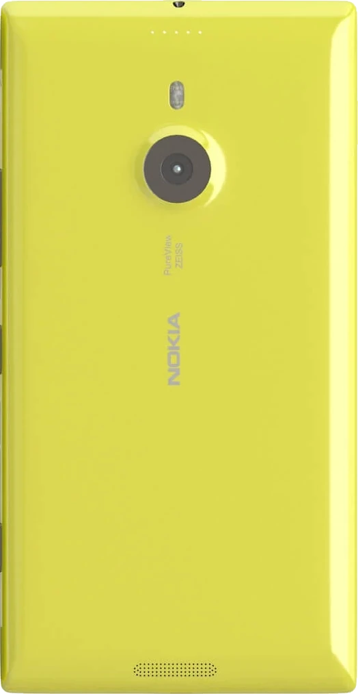

- Latest build
- 22 November 2026
- Android
- 11 (RQ3A.211001.001)
- LineageOS
- 18.1, userdebug, test keys
- Security patch
- 5 February 2024
- Kernel
- 3.4.113, LineageOS msm8974
- Chip
- Snapdragon 800 (MSM8974)
- Codename
- bandit
- SELinux
- Permissive
The first Android builds for the Lumia 1520. The phone launched with Windows Phone 8 and never had an Android vendor, so the build starts from the Windows Phone boot manager through BootShim and lk1st, and runs the LineageOS msm8974 3.4 kernel adapted to the Windows Phone TrustZone, with the OnePlus One blobs and drivers written for the Lumia hardware.
The modem firmware comes from the stock image, where it is encrypted: the phone’s own TrustZone decrypts it at boot. LineageOS works without any Google apps. Treat these builds as experimental.
New in build 2026-11-22
- The memory bus no longer stays at its lowest speed. Since the first build a startup script set the CPU vote for the memory bus to a governor whose hardware monitor never works on the Lumias, so the bus stayed at 100 MHz. Now it follows the CPU: apps start in half the time, and a memory access that misses the cache takes 90% less.
- ROW disk scheduler: a small synchronous write, what an app pays every time it saves to its database, takes 35% less time. On the 930, opening apps while something writes in the background takes 60% less.
- Apps stay in the background: Android closed them after a fixed count, long before memory ran out.
- Quick settings no longer draw faded edges on scrolling labels, which made them expand at 50 fps on the 930.
- The small system apps are compiled in full, and a new installation starts with animations at 0.5x.
Status
- Works
- Not working yet
- Needs testing
What works
Display and system
- Boot through UEFI, BootShim and lk1st. With the installer 0.3.1 or newer, lk1st shows a fastboot menu on the screen
- All four CPU cores
- 1080p display with GPU acceleration, brightness and auto brightness
- Touch, double tap to wake
- Capacitive keys (back, home, recent apps) with backlight
- Performance profiles in the Lumia settings app
Network and connections
- Wi-Fi
- Bluetooth
- NFC (NXP PN544, with the antenna tuning of the stock firmware)
- SIM, LTE data and SMS
Calls and sound
- Outgoing calls
- Loudspeaker (TI TAS2552 amplifier) and earpiece
- Headset jack detection
Camera and video
- Rear and front cameras: photos and video, autofocus, LED flash, upright preview and correct colours
- Video playback with hardware decoding, YouTube at 1080p60 included
Sensors, storage and battery
- Accelerometer, gyroscope, magnetometer, light, proximity
- MicroSD, also as adoptable storage
- Battery percentage and charging, also Qi wireless
- USB ADB
Waiting for your reports
- Microphone in calls: the earlier test turned out to be unreliable on these phones, so it needs a new one
- Incoming calls
- Calls, SMS and mobile data with this build, not tested again yet
- Battery life over long periods
- Models other than the RM-937 (RM-938, RM-939, RM-940)
Not working yet
- GPS: no satellite fix yet. The same software gets a fix on the Lumia 930, so an outdoor test on a 1520 comes next
- No deep sleep on this firmware: the CPU now powers down between wakeups, but standby still drains the battery faster than on Windows
- App transitions can stutter: frames arrive on time, the limit is the command-mode panel
- Always-on display
- SELinux is permissive
Install
A full install erases Windows and everything on the phone. Read the whole guide before you start. You flash at your own risk: there is no warranty, and going back to Windows means flashing a Windows image with WPinternals or Windows Device Recovery Tool.
With the installer (recommended)
The installer for Windows and Linux backs up the phone, copies the stock firmware, installs BootShim and lk1st on EFIESP, creates the Android partitions and then installs the ROM. It starts the Lumia 1520 TWRP in RAM and never writes it to the phone. Its guide describes every step.
You need:
- A Lumia 1520 (RM-937, RM-938, RM-939 or RM-940)
- WPinternals, for the bootloader unlock and the mass storage mode of a first install. It runs only on Windows, also if you then use the installer on Linux
- A Windows 10 or 11 PC (64-bit) or a Linux PC. The Windows package brings its own Python; on Linux you need Python 3.8 or newer, util-linux and ntfs-3g
- Android SDK Platform Tools (adb and fastboot). If they are missing, the installer offers to download them
- On Windows, the Google USB driver
- The battery above 50% and a good USB cable, plugged straight into the PC
- To start Clean or Update from Android: USB debugging on
| Mode | Start from | What it does |
|---|---|---|
| Full | Windows 10 Mobile or 8.1, unlocked with WPinternals and in mass storage mode | Erases Windows. Backs up the phone first: keep that backup, it holds your phone’s calibration and the only exact copy of Windows. Then firmware, boot chain, Android partitions, provisioning and ROM. If it stops, run it again and it continues where it stopped. |
| Clean | lk1st and the Android partitions already in place | Installs the ROM and erases all Android data, internal storage included. |
| Update | This ROM | Installs the new build and keeps your data. |
- Unlock the bootloader with WPinternals on a Windows PC, then switch the phone to mass storage mode.
- Download the installer and put the ROM zip with its
SHA256SUMSin itsromfolder. The installer downloads the TWRP by itself. - Start
installer.baton Windows or./installer.shon Linux, pick Lumia 1520 and choose Full, Clean or Update. - Follow the prompts. Every step that writes to the phone asks you to type a confirmation word, and every file is checked against its SHA-256 before it’s used.
- Wait for the first boot: it takes several minutes.
Manual installation
For a phone that already has lk1st and the Android partitions, for example after a Full install.
- Get to lk1st in fastboot: from Android run
adb reboot bootloader, from TWRP choose Reboot > Bootloader. - Boot the Lumia 1520 TWRP without flashing it:
fastboot boot twrp-3.7.0_9-1-bandit.img - First install only: Wipe > Format Data, then wipe Cache and Dalvik.
- Sideload the ROM from Advanced > ADB Sideload. The transfer stopping around 47% is normal.
adb sideload lineage-18.1-20261122-UNOFFICIAL-bandit.zip - Reboot.
Updating
Run the installer in Update mode, or boot the TWRP again (step 2 above) and sideload the new zip without wiping data.
Keys or gestures
The three capacitive keys work by default. To use gestures, turn on the on-screen navigation bar in Settings > System > Buttons: the keys and their backlight turn off. Then pick Gesture navigation in Settings > System > Gestures > System navigation.
If it bootloops
If adb still sees the phone, run the installer in Update or Clean mode: it stops the loop with adb reboot bootloader. Otherwise get to lk1st, boot the TWRP with fastboot boot and sideload the ROM again. Volume up at power-on always opens the flash mode, the way back with WPinternals.
Downloads
- ROM, build 2026-11-22GitHub release with the zip (about 600 MB) and its SHA256SUMS. The zip carries the phone’s firmware, so it installs on its own
- Installer 0.3.4For Windows and Linux, with Full, Clean and Update modes
- TWRP for the Lumia 1520
twrp-3.7.0_9-1-bandit.img, downloaded by the installer when it’s missing - WPinternalsBootloader unlock and mass storage mode, Windows only
Hardware
- Chip
- Qualcomm Snapdragon 800 (MSM8974), four Krait 400 cores at 2.2 GHz
- Graphics
- Adreno 330
- Memory
- 2 GB RAM
- Storage
- 16 or 32 GB, microSD slot
- Display
- 6 inch IPS LCD, 1080 × 1920, 368 ppi
- Rear camera
- 20 MP PureView, 1/2.5 inch sensor, f/2.4, optical image stabilisation, dual LED flash
- Front camera
- 1.2 MP, 720p video
- Battery
- 3400 mAh, not removable, Qi wireless charging
- Connections
- LTE, Wi-Fi 802.11ac, Bluetooth 4.0, NFC, micro USB
- Models
- RM-937, RM-938, RM-939, RM-940. The builds are tested on an RM-937
From Nokia’s specifications (archived copy) and Wikipedia.
Sources
- KernelLineageOS msm8974 kernel, lineage-18.1-bandit branch
- Device treelineage-18.1 branch
- Vendorlineage-18.1 branch
- msm8974 common treelineage-18.1-lumia branch, shared with the Lumia 930
- LumiaPartsDevice settings app, shared with the Lumia 930
- Local manifestEverything you need on top of LineageOS 18.1 to build it, with the patches for frameworks/base
- TWRP device treetwrp-9.0 branch
- lk1stlk2nd, bandit branch
- InstallerFor the Lumia 1520 and 930
Credits
This port stands on the work of many people. Thank you all.
- KorelisLabs: lumia-1520-mainline (boot chain, device tree, TrustZone quirks, hardware addresses, APDS-9930).
- Markynose (Mark Buchok): lumia930-linux (SMP through the UEFI mailbox, which the power collapse also uses to resume, touch, graphics).
- imbushuo: BootShim.
- msm8916-mainline: lk2nd (lk1st).
- René Lergner (HeathCliff): WPinternals; AkariRiku and joaozittoo: the RM-1085 donor files.
- WOA-Project and the Legacy Portable Computing Wiki: unlock guides.
- Android4Lumia950 (djokcho, EpicLPer, j0sh1x, sonic011gamer and the community): the Lumia Android installer used as the model for the boot chain and partition layout, and the 950 XL work reused here (modem bring-up, UIM bootstrap).
- msm8974-mainline and postmarketOS.
- LineageOS and TheMuppets: the msm8974 kernel, the OnePlus One (bacon) and msm8974-common trees and blobs, the legacy NXP NFC stack.
- NXP (Sylvain Fonteneau): the Android PN544 kernel driver.
- TeamWin: TWRP.
- The mainline Linux authors of the tsl2772, ak8974 (HSCDTD008A) and TAS2552 drivers, used as references; STMicroelectronics: the lis3dh_acc driver used as a model.